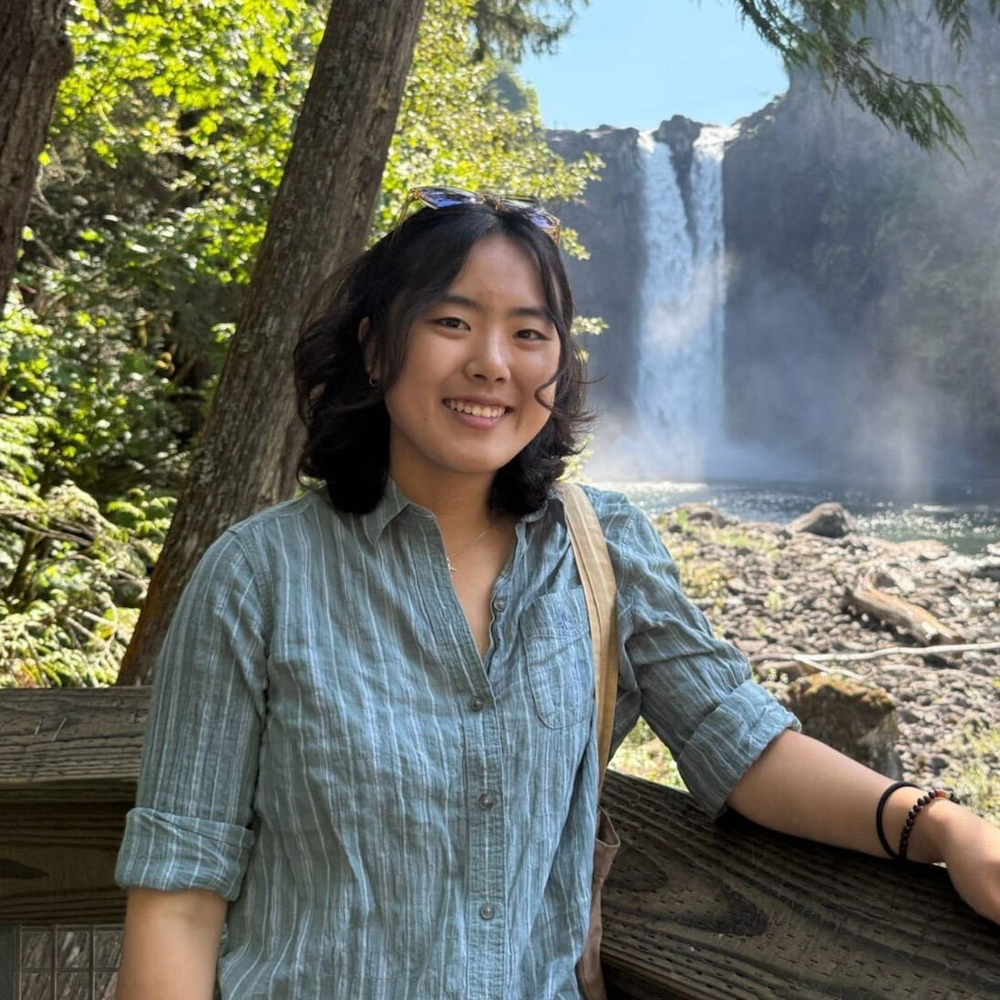

AA 174A / CS 137A / EE 160A
Principles of Robot Autonomy I
Fall 2025
Course Description
This course will cover basic principles for endowing mobile autonomous robots with planning, perception, and decision-making capabilities. Algorithmic approaches for trajectory optimization; robot motion planning; robot perception, localization, and simultaneous localization and mapping (SLAM); state machines. Extensive use of the Robot Operating System (ROS) for demonstrations and hands-on activities. Prerequisites: CS 106A or equivalent, CME 100 or equivalent (for calculus, linear algebra), and CME 106 or equivalent (for probability theory).
Instructor
 Marco Pavone
Marco Pavone
|
|---|
Course Assistants
 Milan Ganai
Milan Ganai
|
 Jacky Kwok
Jacky Kwok
|
 Jenny Kim |
|---|
Meeting Times
Lectures meet on Tuesdays and Thursdays from 10:30am to 11:50am at CoDa B60.
Students are expected to attend one 2-hour section each week. Check announcements for more details
Prof. Pavone's office hours are on Tuesdays 1:00 - 2:00pm in Durand 261 and by appointment.
CA office hours:
- Wednesdays, 4:30 - 6:30pm in Durand 270
- Thursdays, 4:30 - 6:30pm in Durand 270
Syllabus
The class syllabus can be found here.
Links
Canvas -- for course content, recordings, and announcements.
Gradescope -- for homework and project submissions.
Edstem -- for discussions and questions.
Section Sign-up -- sign up for a section time
slot by 12 PM on Thursday, September 25th.
Resources
The homeworks require you to set up a local ROS2 environment and install vairous packages. Follow this guide to set up environment on your local machine. Additional recommended reading material:
D. Gammelli, J. Lorenzetti, K. Luo, G. Zardini, M. Pavone. Principles of Robot Autonomy. Pre-print, 2025. Available at:
https://stanfordasl.github.io/PoRA-I/aa174a_aut2526/resources/PoRA.pdf
Lecture Notes
The lecture notes are highly recommended optional readings for this course. It covers more advanced topics and provides additional context for concepts and algorithms covered in the lectures.
Paper Review
Taking this class for 4 units entails additionally completing a paper review by the end of the quarter. Paper review requirements will be announced soon.
Schedule
Subject to change. We will try to have the lecture slides and notes uploaded before each class period.
| Week | Topic | Lecture Slides | Jupyter Notebooks | Sections |
|---|---|---|---|---|
| 1 |
Course overview, intro to robotic systems and ROS
Fundamentals of ROS Friday: HW1 out |
Lecture 1 Lecture 2 Pre-knowledge quiz |
Section 1 Handout Section 1 Slides |
|
| 2 |
State space dynamics — definitions and modeling
State space dynamics — computation and simulation |
Lecture 3
Lecture 4 |
Notebook 3 & 4 |
Section 2 Handout
Section 2 Slides |
| 3 |
Trajectory optimization
Trajectory tracking & closed-loop control Tuesday: HW2 out Friday: HW1 due |
Lecture 5
Lecture 6 |
Notebook 5.1
Notebook 5.2 |
Section 3 Handout
Section 3 Slides |
| 4 |
Graph search algorithms
Sampling-based motion planning |
Lecture 7
Lecture 8 Practice Midterm Practice Midterm Solution |
Notebook 8 |
Section 4 Handout
Section 4 Slides |
| 5 |
Robotic sensors & introduction to computer vision
Camera models & coordinate frames Monday: HW2 due Tuesday: HW3 out |
Lecture 9
Lecture 10 |
Notebook 9
Notebook 10 |
Section 5 Handout |
| 6 |
Image processing, feature detection, and feature description
Information extraction Friday: HW3 due, HW4 (part 1) out |
Lecture 11
Lecture 12 |
Notebook 11
Notebook 12 |
Section 6 Handout |
| 7 |
Tuesday: No lecture (Democracy Day)
Thursday: In-class midterm |
|||
| 8 |
Deep learning for computer vision
Intro to state estimation & filtering theory Friday: HW4 (part 1) due, HW4 (part 2) out |
Lecture 13
Lecture 14 |
Section 6 Handout | |
| 9 |
Parametric filtering (KF and EKF)
Markov localization and EKF-localization |
Lecture 15
Lecture 16 |
Notebook 15
Notebook 16 |
Section 7 Handout |
| N/A | Thanksgiving Break | |||
| 10 |
Multi-sensor perception & sensor fusion
Simultaneous localization and mapping (SLAM) Tuesday: HW4 (part 2) due |
Lecture 17 (part 1) / Lecture 17 (part 2)
Lecture 18 |
Follow this link to access the course website for the previous edition of Principle of Robot Autonomy I.